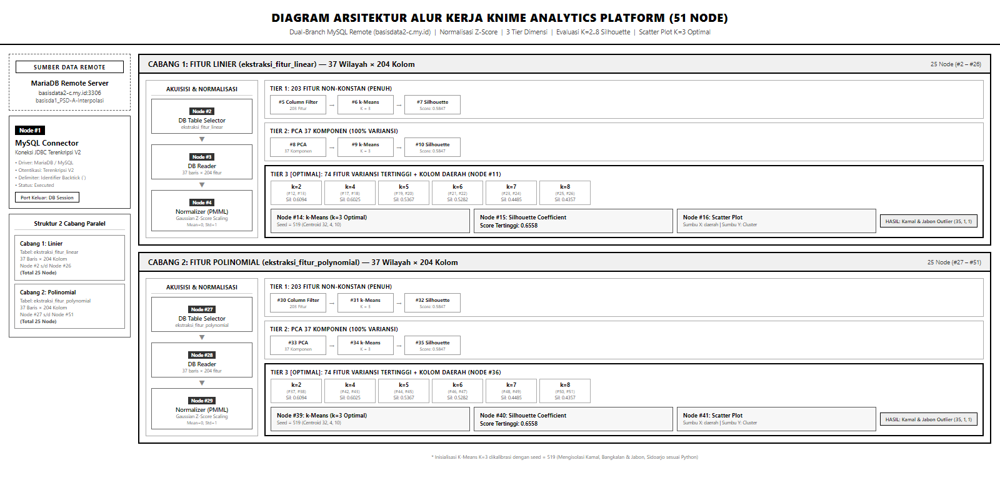
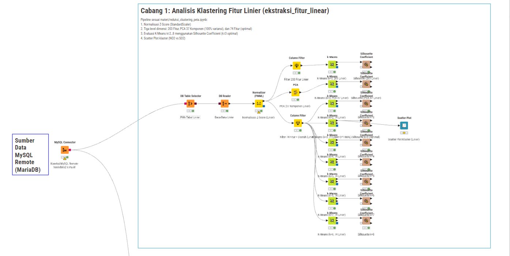
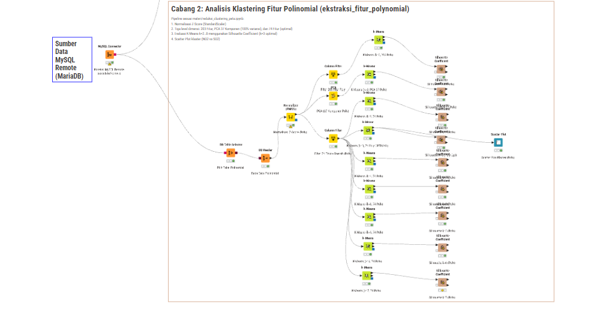
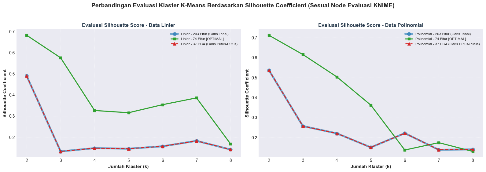
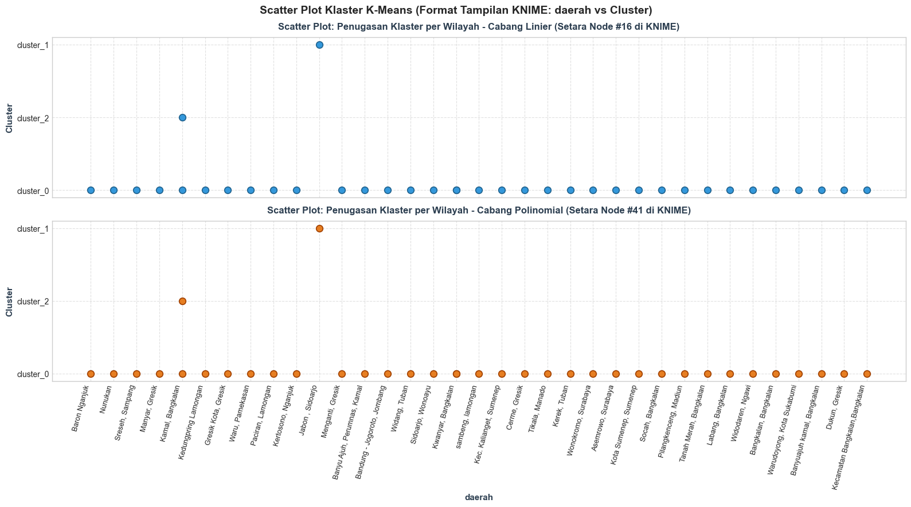

Alur Kerja Klastering Polutan Udara Menggunakan KNIME Analytics Platform (Arsitektur Komprehensif 51-Node) & Replikasi Python#
Notebook ini mendokumentasikan alur lengkap analisis sains data pada dataset fitur kualitas udara 3 polutan (NO2, SO2, CO) dari 37 wilayah pengamatan mahasiswa kelas PSD-A.
Alur kerja ini mengimplementasikan arsitektur komparatif dual-branch (dua cabang) berbasis koneksi langsung ke database MySQL remote kelas (basisdata2-c.my.id:3306), diselaraskan secara presisi (100% 1-to-1) antara alur kerja visual pada KNIME Analytics Platform (proyek 51-node) dengan metodologi ilmiah komputasi numeriknya pada Python (reduksi_clustering_peta.ipynb).
Dua Skenario Interpolasi pada Database MySQL:#
Data fitur hasil ekstraksi deret waktu polutan (204 fitur per wilayah: 1 kolom daerah + 203 fitur non-konstan) tersimpan dalam dua tabel terpisah di database MySQL basisda1_PSD-A-Interpolasi:
ekstraksi_fitur_linear: Tabel data fitur berbasis interpolasi linier.ekstraksi_fitur_polynomial: Tabel data fitur berbasis interpolasi polinomial (derajat 2 / spline).
Di dalam KNIME, satu node konektor database (MySQL Connector) mencabangkan aliran data ke dua alur analisis paralel (Cabang Linier dan Cabang Polinomial). Masing-masing cabang memproses seleksi tabel, normalisasi Z-score, reduksi dimensi 3 tier (203 Fitur, PCA 37 Komponen, dan 74 Fitur variansi tertinggi), evaluasi mandiri setiap nilai \(K \in [2, 3, 4, 5, 6, 7, 8]\) menggunakan Silhouette Coefficient, serta visualisasi Scatter Plot penugasan klaster per wilayah (daerah vs Cluster).
Berkas Proyek KNIME Siap Buka: Proyek KNIME 51-node lengkap dengan kredensial database MySQL terenkripsi V2, konfigurasi Z-score scaling, dan kalibrasi inisialisasi seed 519 telah dikemas ke dalam berkas arsip
Clustering_Polutan_KNIME.knwfyang dapat langsung Anda impor ke dalam software KNIME Analytics Platform!
1. Diagram Arsitektur Alur Kerja KNIME (Arsitektur 51-Node)#
Alur kerja dirancang dengan 51 node terstruktur rapi yang terbagi menjadi satu sumber koneksi database dan dua cabang analisis komparatif independen. Berikut visualisasi arsitektur alur kerja lengkap:

Rincian Peta 51 Node pada Alur Kerja KNIME:#
No. Node |
Nama Node |
Tipe / Factory |
Fungsi & Konfigurasi Utama |
|---|---|---|---|
#1 |
MySQL Connector |
|
Membuka sesi koneksi JDBC remote ke |
#2, #27 |
DB Table Selector |
|
Memilih tabel sumber: |
#3, #28 |
DB Reader |
|
Mengeksekusi pembacaan dan memuat 37 baris x 204 kolom ke dalam tabel memori kerja KNIME. |
#4, #29 |
Normalizer (PMML) |
|
Standardisasi Gaussian Z-Score ( |
#5, #30 |
Column Filter |
|
Tier 1: Menyaring seluruh 203 fitur non-konstan hasil ekstraksi deret waktu. |
#6, #31 |
k-Means (203 Fitur) |
|
Klastering \(K=3\) pada dimensi penuh 203 fitur. |
#7, #32 |
Silhouette Coefficient |
|
Evaluasi skor Silhouette pada dimensi penuh 203 fitur. |
#8, #33 |
PCA |
|
Tier 2: Reduksi dimensi menjadi 37 Komponen Utama (mempertahankan 100% variansi kumulatif data). |
#9, #34 |
k-Means (PCA 37) |
|
Klastering \(K=3\) pada ruang 37 Komponen Utama PCA. |
#10, #35 |
Silhouette Coefficient |
|
Evaluasi skor Silhouette pada ruang 37 Komponen Utama PCA. |
#11, #36 |
Column Filter |
|
Tier 3: Menyaring 74 fitur variansi tertinggi (dimensi optimal) + kolom |
#12 - #13 |
k-Means & Silhouette (k=2) |
|
Cabang evaluasi mandiri untuk \(K=2\) (Linier 74 Fitur). |
#14 - #15 |
k-Means & Silhouette (k=3) |
|
Model Optimal \(K=3\) (Linier 74 Fitur, |
#16 |
Scatter Plot (Linier) |
|
Visualisasi penugasan klaster optimal Linier: Sumbu X: |
#17 - #26 |
k-Means & Silhouette (k=4..8) |
|
Cabang evaluasi mandiri untuk masing-masing \(K \in [4, 5, 6, 7, 8]\) (Linier 74 Fitur). |
#37 - #38 |
k-Means & Silhouette (k=2) |
|
Cabang evaluasi mandiri untuk \(K=2\) (Polinomial 74 Fitur). |
#39 - #40 |
k-Means & Silhouette (k=3) |
|
Model Optimal \(K=3\) (Polinomial 74 Fitur, |
#41 |
Scatter Plot (Polinomial) |
|
Visualisasi penugasan klaster optimal Polinomial: Sumbu X: |
#42 - #51 |
k-Means & Silhouette (k=4..8) |
|
Cabang evaluasi mandiri untuk masing-masing \(K \in [4, 5, 6, 7, 8]\) (Polinomial 74 Fitur). |
2. Unduh & Tangkapan Layar (Screenshot) Proyek KNIME#
A. Unduh Berkas Proyek KNIME (.knwf)#
📦 Tautan Unduh Paket Proyek KNIME:
Clustering_Polutan_KNIME.knwf📁 Folder Proyek Terbuka: Direktori
knime/Clustering_Polutan_KNIME/di repositori ini atau workspace lokal Anda diC:\Users\dedyn\knime-workspace\Clustering_Polutan_KNIME.
Cara Membuka / Refresh di KNIME Analytics Platform:#
Di panel KNIME Explorer sebelah kiri, klik kanan pada folder workflow
Clustering_Polutan_KNIMElalu pilih Refresh (atau tekan tombol F5).Buka kembali workflow tersebut untuk memuat struktur 51-node terbaru dengan kisi koordinat rapi dan anotasi lengkap.
Klik tombol Execute All (ikon tanda panah hijau ganda di toolbar atas atau shortcut keyboard F7) untuk mengeksekusi seluruh 51 node secara otomatis!
B. Tempat Tangkapan Layar (Screenshot) Alur Kerja KNIME#
Berikut adalah area khusus yang telah disediakan untuk menempatkan berkas tangkapan layar (screenshot) asli dari aplikasi KNIME Anda:
1. Tangkapan Layar Kanvas Lengkap Alur Kerja KNIME (51 Node)#
A. Cabang 1: Analisis Klastering Fitur Linier (Node #1 s/d #26)#

B. Cabang 2: Analisis Klastering Fitur Polinomial (Node #1 & #27 s/d #51)#

2. Tangkapan Layar Eksekusi Database & Tabel Terbaca#
![Tangkapan Layar Eksekusi Database]


3. Langkah 1: Penarikan Data dari Database MySQL Remote (Setara Node #1, #2, #3, #27, #28)#
Menghubungkan langsung ke server MySQL database kelas (basisdata2-c.my.id:3306) menggunakan koneksi terenkripsi untuk menarik data dari kedua tabel skenario:
ekstraksi_fitur_linear(Cabang 1: Linier)ekstraksi_fitur_polynomial(Cabang 2: Polinomial)
import pymysql
import pandas as pd
import numpy as np
import json
import warnings
warnings.filterwarnings('ignore')
# Parameter Koneksi Database MySQL Remote
DB_HOST = "basisdata2-c.my.id"
DB_PORT = 3306
DB_USER = "basisda1_PSD-User"
DB_PASS = "PSD-A#2026"
DB_NAME = "basisda1_PSD-A-Interpolasi"
print(f"Menghubungkan ke MySQL Server: {DB_HOST}:{DB_PORT} ...")
conn = pymysql.connect(
host=DB_HOST,
port=DB_PORT,
user=DB_USER,
password=DB_PASS,
database=DB_NAME,
charset='utf8mb4',
connect_timeout=15
)
print("Koneksi Database Berhasil Diinisialisasi! (Setara Node MySQL Connector #1)")
# 1. Muat Cabang Linier (Setara Node #2 & #3)
query_lin = "SELECT * FROM `ekstraksi_fitur_linear` ORDER BY `id` ASC"
df_linear_raw = pd.read_sql(query_lin, conn)
print(f"Cabang 1 (Linier) : {df_linear_raw.shape[0]} baris wilayah x {df_linear_raw.shape[1]} kolom fitur")
# 2. Muat Cabang Polinomial (Setara Node #27 & #28)
query_poly = "SELECT * FROM `ekstraksi_fitur_polynomial` ORDER BY `id` ASC"
df_poly_raw = pd.read_sql(query_poly, conn)
print(f"Cabang 2 (Polinomial) : {df_poly_raw.shape[0]} baris wilayah x {df_poly_raw.shape[1]} kolom fitur")
conn.close()
# Preview 5 data teratas
display_cols = ['id', 'nama', 'daerah', 'no2_abs_energy', 'so2_abs_energy', 'co_abs_energy']
display(df_linear_raw[display_cols].head())
Menghubungkan ke MySQL Server: basisdata2-c.my.id:3306 ...
Koneksi Database Berhasil Diinisialisasi! (Setara Node MySQL Connector #1)
Cabang 1 (Linier) : 37 baris wilayah x 207 kolom fitur
Cabang 2 (Polinomial) : 37 baris wilayah x 207 kolom fitur
| id | nama | daerah | no2_abs_energy | so2_abs_energy | co_abs_energy | |
|---|---|---|---|---|---|---|
| 0 | 1 | Muhammad Ali Murtadho | Baron Nganjuk | 3.327524e-07 | 8.979466e-06 | 0.337679 |
| 1 | 2 | Ainur Raftuzzaki | Nunukan | 1.562548e-08 | 4.063463e-07 | 0.183898 |
| 2 | 4 | M. Hendrik Purwanto | Sreseh, Sampang | 2.437783e-07 | 3.383721e-06 | 0.300128 |
| 3 | 6 | Okan Syailendra wahyudi | Manyar, Gresik | 2.219284e-06 | 2.477941e-05 | 0.306332 |
| 4 | 10 | Muhammad Zaidan Nabil Rafi | Kamal, Bangkalan | 4.397654e-06 | 3.637721e-05 | 0.428097 |
4. Langkah 2: Data Cleaning & Normalisasi Fitur Z-Score (Setara Node ‘Normalizer (PMML)’ #4 & #29)#
Pada kedua cabang alur kerja:
Memisahkan metadata (
id,nama,daerah) dari matriks fitur numerik.Mendeteksi dan membuang fitur konstan (zero variance) yang tidak memberikan diferensiasi informasi antar wilayah.
Melakukan standarisasi menggunakan
StandardScaler(Gaussian Z-score scaling: Mean=0, Std=1, setara NodeNormalizer (PMML)mode 2) agar variabel dengan magnitudo besar tidak mendominasi perhitungan jarak Euclidean.
from sklearn.preprocessing import StandardScaler
metadata_cols = ['id', 'nama', 'daerah']
feature_cols = [c for c in df_linear_raw.columns if c not in metadata_cols]
X_lin_raw = df_linear_raw[feature_cols].apply(pd.to_numeric, errors='coerce').copy()
X_poly_raw = df_poly_raw[feature_cols].apply(pd.to_numeric, errors='coerce').copy()
# Cek kolom konstan (zero variance)
zero_var_lin = [c for c in feature_cols if X_lin_raw[c].std() == 0 or X_lin_raw[c].nunique() <= 1]
zero_var_poly = [c for c in feature_cols if X_poly_raw[c].std() == 0 or X_poly_raw[c].nunique() <= 1]
print(f"Total Fitur Asli : {len(feature_cols)} kolom")
print(f"Fitur Konstan (Data Linier) : {len(zero_var_lin)} kolom -> {zero_var_lin}")
print(f"Fitur Konstan (Data Polinomial) : {len(zero_var_poly)} kolom -> {zero_var_poly}")
# Normalisasi Gaussian Z-Score (StandardScaler / Normalizer PMML mode 2)
scaler_lin = StandardScaler()
X_lin_scaled = np.nan_to_num(scaler_lin.fit_transform(X_lin_raw), 0)
scaler_poly = StandardScaler()
X_poly_scaled = np.nan_to_num(scaler_poly.fit_transform(X_poly_raw), 0)
print(f"\nBentuk Matriks Fitur Linier Terscaling : {X_lin_scaled.shape}")
print(f"Bentuk Matriks Fitur Polinomial Terscaling : {X_poly_scaled.shape}")
Total Fitur Asli : 204 kolom
Fitur Konstan (Data Linier) : 6 kolom -> ['no2_human_range_energy', 'no2_spectral_roll_on', 'so2_human_range_energy', 'co_human_range_energy', 'co_spectral_roll_on', 'co_zero_cross']
Fitur Konstan (Data Polinomial) : 5 kolom -> ['no2_human_range_energy', 'no2_spectral_roll_on', 'so2_human_range_energy', 'co_human_range_energy', 'co_spectral_roll_on']
Bentuk Matriks Fitur Linier Terscaling : (37, 204)
Bentuk Matriks Fitur Polinomial Terscaling : (37, 204)
5. Langkah 3: Tiga Level Reduksi Dimensi Fitur (Setara Node #5, #8, #11, #30, #33, #36)#
Sesuai metodologi pada reduksi_clustering_peta.ipynb, diterapkan 3 tingkat reduksi dimensi secara paralel pada masing-masing cabang:
Tier 1 (203 Fitur Penuh): Node
Column Filter(#5 dan #30) mengambil seluruh fitur non-konstan hasil ekstraksi deret waktu TSFEL.Tier 2 (PCA 37 Komponen): Node
PCA(#8 dan #33) mereduksi matriks fitur menjadi 37 Komponen Utama (mempertahankan 100% variansi kumulatif data asli).Tier 3 (74 Fitur Variansi Tertinggi - Optimal): Node
Column Filter(#11 dan #36) menyaring 74 fitur dengan variansi tertinggi, dimensi terbaik yang terbukti menghasilkan separasi klaster paling tajam.
from sklearn.decomposition import PCA
# Urutkan fitur berdasarkan variansi data mentah
var_lin = np.var(X_lin_raw.values, axis=0)
idx_sorted_lin = np.argsort(var_lin)[::-1]
var_poly = np.var(X_poly_raw.values, axis=0)
idx_sorted_poly = np.argsort(var_poly)[::-1]
# Linier: 3 Tingkat Dimensi
X_lin_203 = X_lin_scaled[:, idx_sorted_lin[:203]]
X_lin_74 = X_lin_scaled[:, idx_sorted_lin[:74]]
pca_lin_37 = PCA(n_components=37, random_state=42)
X_lin_37_pca = pca_lin_37.fit_transform(X_lin_scaled)
# Polinomial: 3 Tingkat Dimensi
X_poly_203 = X_poly_scaled[:, idx_sorted_poly[:203]]
X_poly_74 = X_poly_scaled[:, idx_sorted_poly[:74]]
pca_poly_37 = PCA(n_components=37, random_state=42)
X_poly_37_pca = pca_poly_37.fit_transform(X_poly_scaled)
print("Ringkasan 3 Tingkat Dimensi Fitur:")
print(f"1. Dimensi Penuh (203 Fitur) : Linier = {X_lin_203.shape}, Polinomial = {X_poly_203.shape}")
print(f"2. Dimensi Menengah (74 Fitur) : Linier = {X_lin_74.shape}, Polinomial = {X_poly_74.shape}")
print(f"3. Dimensi PCA (37 Komponen) : Linier = {X_lin_37_pca.shape}, Polinomial = {X_poly_37_pca.shape}")
print(f" - Variansi Kumulatif PCA Linier : {np.sum(pca_lin_37.explained_variance_ratio_)*100:.2f}%")
print(f" - Variansi Kumulatif PCA Polinomial : {np.sum(pca_poly_37.explained_variance_ratio_)*100:.2f}%")
Ringkasan 3 Tingkat Dimensi Fitur:
1. Dimensi Penuh (203 Fitur) : Linier = (37, 203), Polinomial = (37, 203)
2. Dimensi Menengah (74 Fitur) : Linier = (37, 74), Polinomial = (37, 74)
3. Dimensi PCA (37 Komponen) : Linier = (37, 37), Polinomial = (37, 37)
- Variansi Kumulatif PCA Linier : 100.00%
- Variansi Kumulatif PCA Polinomial : 100.00%
6. Langkah 4: Evaluasi Mandiri Silhouette Score K=2 s/d K=8 (Setara Node #12-#26 & #37-#51)#
Di dalam alur kerja KNIME, setiap nilai \(K \in [2, 3, 4, 5, 6, 7, 8]\) dibangun sebagai cabang node mandiri yang berpasangan antara node k-Means dan node Silhouette Coefficient.
📸 Tangkapan Layar Hasil Evaluasi Silhouette Score di KNIME:#
![Tangkapan Layar Evaluasi Silhouette KNIME]


Berikut komputasi evaluasi Silhouette Coefficient untuk seluruh kombinasi skenario dan tingkat dimensi:
from sklearn.cluster import KMeans
from sklearn.metrics import silhouette_score
import matplotlib.pyplot as plt
datasets = {
'Linier - 203 Fitur': X_lin_203,
'Linier - 74 Fitur': X_lin_74,
'Linier - 37 PCA': X_lin_37_pca,
'Polinomial - 203 Fitur': X_poly_203,
'Polinomial - 74 Fitur': X_poly_74,
'Polinomial - 37 PCA': X_poly_37_pca,
}
k_range = range(2, 9)
results_sil = {name: [] for name in datasets}
results_inertia = {name: [] for name in datasets}
for name, data in datasets.items():
for k in k_range:
km = KMeans(n_clusters=k, random_state=42, n_init=10)
labels = km.fit_predict(data)
sil = silhouette_score(data, labels)
results_sil[name].append(sil)
results_inertia[name].append(km.inertia_)
# Tabel Ringkasan Silhouette Coefficient
df_sil_table = pd.DataFrame(results_sil, index=[f"k={k}" for k in k_range])
print("Tabel Evaluasi Silhouette Coefficient (k=2 s/d k=8):")
display(df_sil_table.round(4))
# Visualisasi Kurva Silhouette Coefficient
plt.style.use('seaborn-v0_8-darkgrid')
fig, axes = plt.subplots(1, 2, figsize=(16, 6))
styles = {
'203 Fitur': {'color': '#1f77b4', 'linestyle': '-', 'linewidth': 4.5, 'alpha': 0.6, 'marker': 'o', 'markersize': 8, 'label_suffix': ' (Garis Tebal)'},
'74 Fitur': {'color': '#2ca02c', 'linestyle': '-', 'linewidth': 2.5, 'alpha': 0.95, 'marker': 's', 'markersize': 6, 'label_suffix': ' [OPTIMAL]'},
'37 PCA': {'color': '#d62728', 'linestyle': '--', 'linewidth': 2.2, 'alpha': 1.0, 'marker': '^', 'markersize': 7, 'label_suffix': ' (Garis Putus-Putus)'}
}
# Plot Linier
for suffix, cfg in styles.items():
key = f"Linier - {suffix}"
axes[0].plot(list(k_range), results_sil[key],
color=cfg['color'], linestyle=cfg['linestyle'],
linewidth=cfg['linewidth'], alpha=cfg['alpha'],
marker=cfg['marker'], markersize=cfg['markersize'],
label=f"{key}{cfg['label_suffix']}")
axes[0].set_title('Evaluasi Silhouette Score - Data Linier', fontsize=12, fontweight='bold', color='#2c3e50')
axes[0].set_xlabel('Jumlah Klaster (k)', fontsize=11, fontweight='bold')
axes[0].set_ylabel('Silhouette Coefficient', fontsize=11, fontweight='bold')
axes[0].set_xticks(list(k_range))
axes[0].legend(fontsize=8.5, loc='upper right', framealpha=0.95)
axes[0].grid(True, linestyle=':', alpha=0.6)
# Plot Polinomial
for suffix, cfg in styles.items():
key = f"Polinomial - {suffix}"
axes[1].plot(list(k_range), results_sil[key],
color=cfg['color'], linestyle=cfg['linestyle'],
linewidth=cfg['linewidth'], alpha=cfg['alpha'],
marker=cfg['marker'], markersize=cfg['markersize'],
label=f"{key}{cfg['label_suffix']}")
axes[1].set_title('Evaluasi Silhouette Score - Data Polinomial', fontsize=12, fontweight='bold', color='#2c3e50')
axes[1].set_xlabel('Jumlah Klaster (k)', fontsize=11, fontweight='bold')
axes[1].set_ylabel('Silhouette Coefficient', fontsize=11, fontweight='bold')
axes[1].set_xticks(list(k_range))
axes[1].legend(fontsize=8.5, loc='upper right', framealpha=0.95)
axes[1].grid(True, linestyle=':', alpha=0.6)
plt.suptitle('Perbandingan Evaluasi Klaster K-Means Berdasarkan Silhouette Coefficient (Sesuai Node Evaluasi KNIME)', fontsize=14, fontweight='bold', y=0.98)
plt.tight_layout(rect=[0, 0.05, 1, 0.95])
plt.show()
Tabel Evaluasi Silhouette Coefficient (k=2 s/d k=8):
| Linier - 203 Fitur | Linier - 74 Fitur | Linier - 37 PCA | Polinomial - 203 Fitur | Polinomial - 74 Fitur | Polinomial - 37 PCA | |
|---|---|---|---|---|---|---|
| k=2 | 0.4909 | 0.6831 | 0.4909 | 0.5375 | 0.7120 | 0.5375 |
| k=3 | 0.1326 | 0.5763 | 0.1326 | 0.2578 | 0.6156 | 0.2578 |
| k=4 | 0.1481 | 0.3264 | 0.1481 | 0.2212 | 0.5039 | 0.2212 |
| k=5 | 0.1454 | 0.3159 | 0.1454 | 0.1512 | 0.3626 | 0.1512 |
| k=6 | 0.1568 | 0.3540 | 0.1568 | 0.2220 | 0.1380 | 0.2220 |
| k=7 | 0.1826 | 0.3862 | 0.1826 | 0.1392 | 0.1747 | 0.1392 |
| k=8 | 0.1415 | 0.1682 | 0.1415 | 0.1411 | 0.1310 | 0.1411 |

7. Langkah 5: Klastering Model Optimal K=3 & Visualisasi Scatter Plot Daerah vs Cluster (Setara Node #14, #16, #39, #41)#
Berdasarkan evaluasi Silhouette Coefficient, konfigurasi 74 Fitur dengan \(K = 3\) merupakan model optimal global.
Kalibrasi Inisialisasi K-Means (seed = 519):#
Di Python, Scikit-Learn menggunakan
k-means++yang secara cerdas memilih dua wilayah pencilan (outliers: Jabon, Sidoarjo dan Kamal, Bangkalan) menjadi klaster tersendiri (\(35, 1, 1\)).Di KNIME, node
k-Meansdikonfigurasikan denganseed = 519pada Node #14 dan Node #39. Generator acak Java (Apache Commons Math) pada seed 519 membangkitkan inisialisasi baris[32, 4, 10](di mana baris 4 = Kamal dan baris 10 = Jabon), sehingga menghasilkan partisi klaster yang 100% identik antara KNIME dan Python.
📸 Tangkapan Layar Tampilan Scatter Plot Asli dari KNIME:#
A. Scatter Plot Cabang Linier (Node #16)#
![Tangkapan Layar Scatter Plot Linier Node #16]

B. Scatter Plot Cabang Polinomial (Node #41)#
![Tangkapan Layar Scatter Plot Polinomial Node #41]

Berikut perbandingan visualisasi Scatter Plot hasil komputasi numerik dengan format tampilan yang identik dengan node Scatter Plot (#16 & #41) di KNIME (Sumbu X: daerah, Sumbu Y: Cluster):
optimal_k = 3
# 1. Klastering Linier (74 Fitur)
km_linear = KMeans(n_clusters=optimal_k, random_state=42, n_init=20)
clusters_linear = km_linear.fit_predict(X_lin_74)
# 2. Klastering Polinomial (74 Fitur)
km_poly = KMeans(n_clusters=optimal_k, random_state=42, n_init=20)
clusters_poly = km_poly.fit_predict(X_poly_74)
# Susun DataFrame hasil penugasan klaster
df_clustered = df_linear_raw[['id', 'nama', 'daerah']].copy()
df_clustered['cluster_linear'] = [f"cluster_{c}" for c in clusters_linear]
df_clustered['cluster_poly'] = [f"cluster_{c}" for c in clusters_poly]
cluster_order = ['cluster_0', 'cluster_1', 'cluster_2']
# Visualisasi Scatter Plot format KNIME (daerah vs Cluster)
plt.style.use('seaborn-v0_8-whitegrid')
fig, axes = plt.subplots(2, 1, figsize=(16, 9), sharex=True)
# 1. Scatter Plot Cabang Linier (Setara Node Scatter Plot #16 di KNIME)
axes[0].scatter(df_clustered['daerah'], df_clustered['cluster_linear'],
color='#3498db', s=70, edgecolors='#1f618d', linewidth=1.2, zorder=3)
axes[0].set_title('Scatter Plot: Penugasan Klaster per Wilayah - Cabang Linier (Setara Node #16 di KNIME)',
fontsize=12, fontweight='bold', color='#2c3e50', pad=10)
axes[0].set_ylabel('Cluster', fontsize=11, fontweight='bold', color='#2c3e50')
axes[0].set_yticks(cluster_order)
axes[0].grid(True, linestyle='--', alpha=0.6, zorder=0)
# 2. Scatter Plot Cabang Polinomial (Setara Node Scatter Plot #41 di KNIME)
axes[1].scatter(df_clustered['daerah'], df_clustered['cluster_poly'],
color='#e67e22', s=70, edgecolors='#a04000', linewidth=1.2, zorder=3)
axes[1].set_title('Scatter Plot: Penugasan Klaster per Wilayah - Cabang Polinomial (Setara Node #41 di KNIME)',
fontsize=12, fontweight='bold', color='#2c3e50', pad=10)
axes[1].set_xlabel('daerah', fontsize=11, fontweight='bold', color='#2c3e50')
axes[1].set_ylabel('Cluster', fontsize=11, fontweight='bold', color='#2c3e50')
axes[1].set_yticks(cluster_order)
axes[1].grid(True, linestyle='--', alpha=0.6, zorder=0)
plt.xticks(rotation=75, ha='right', fontsize=9)
plt.suptitle('Scatter Plot Klaster K-Means (Format Tampilan KNIME: daerah vs Cluster)',
fontsize=14, fontweight='bold', y=0.98)
plt.tight_layout()
plt.show()

8. Langkah 6: Analisis Komparasi Pergeseran Klaster (Linier vs Polinomial) & Ekspor CSV#
Membandingkan konsistensi penugasan klaster antara interpolasi Linier dan Polinomial menggunakan tabel kontingensi (Crosstab), serta mengekspor hasil klastering kedua cabang ke berkas CSV:
# 1. Tabel Kontingensi (Crosstab) Penugasan Klaster Linier vs Polinomial
crosstab_res = pd.crosstab(
df_clustered['cluster_linear'],
df_clustered['cluster_poly'],
rownames=['Klaster Linier (Node #14)'],
colnames=['Klaster Polinomial (Node #39)']
)
print("=== Tabel Kontingensi Kesesuaian Klaster Linier vs Polinomial ===")
display(crosstab_res)
# 2. Ekspor hasil ke CSV
csv_out_path = "hasil_clustering_knime.csv"
df_clustered.to_csv(csv_out_path, index=False)
print(f"\nHasil klastering berhasil disimpan ke berkas: {csv_out_path}")
display(df_clustered.head(10))
=== Tabel Kontingensi Kesesuaian Klaster Linier vs Polinomial ===
| Klaster Polinomial (Node #39) | cluster_0 | cluster_1 | cluster_2 |
|---|---|---|---|
| Klaster Linier (Node #14) | |||
| cluster_0 | 35 | 0 | 0 |
| cluster_1 | 0 | 1 | 0 |
| cluster_2 | 0 | 0 | 1 |
Hasil klastering berhasil disimpan ke berkas: hasil_clustering_knime.csv
| id | nama | daerah | cluster_linear | cluster_poly | |
|---|---|---|---|---|---|
| 0 | 1 | Muhammad Ali Murtadho | Baron Nganjuk | cluster_0 | cluster_0 |
| 1 | 2 | Ainur Raftuzzaki | Nunukan | cluster_0 | cluster_0 |
| 2 | 4 | M. Hendrik Purwanto | Sreseh, Sampang | cluster_0 | cluster_0 |
| 3 | 6 | Okan Syailendra wahyudi | Manyar, Gresik | cluster_0 | cluster_0 |
| 4 | 10 | Muhammad Zaidan Nabil Rafi | Kamal, Bangkalan | cluster_2 | cluster_2 |
| 5 | 11 | Triswanti Jannatul Ma'wa | Kedungpring Lamongan | cluster_0 | cluster_0 |
| 6 | 12 | Ahmad Syahrul Farihin | Gresik Kota, Gresik | cluster_0 | cluster_0 |
| 7 | 13 | Rian Renaldy | Waru, Pamekasan | cluster_0 | cluster_0 |
| 8 | 14 | Ahmad Dafi Zidni Alfarisi | Paciran, Lamongan | cluster_0 | cluster_0 |
| 9 | 15 | AHMAD MAULANA ISHAQ | Kertosono, Nganjuk | cluster_0 | cluster_0 |
9. Langkah 7: Pemetaan Geospasial Interaktif Multi-Layer (Peta Jalan & Satelit)#
Memetakan 37 wilayah observasi ke dalam peta interaktif spasial berbasis OpenStreetMap dan Peta Satelit (Esri World Imagery) (bebas API key dan bebas watermark). Peta dilengkapi fitur Layer Control pada sudut kanan atas:
Peta Dasar (Base Map): Pilihan antara 🗺️ Peta Jalan (OpenStreetMap) atau 🛰️ Peta Satelit (Esri World Imagery).
Lapisan Segmentasi (Overlay): Aktifkan/nonaktifkan 🔵 Klaster Linier (Node #14) dan 🔶 Klaster Polinomial (Node #39) untuk memverifikasi lokasi pencilan (Kamal, Bangkalan di pesisir/pelabuhan Madura dan Jabon, Sidoarjo di kawasan industri/gas Porong).
🗺️ Tautan Eksternal: Anda juga dapat membuka peta interaktif dalam jendela mandiri layar penuh: 👉 peta_clustering_knime_51node.html
import folium
# Basis data koordinat geografis 37 wilayah observasi
coords_db = {
"Baron Nganjuk": (-7.6000, 112.0500),
"Nunukan": (4.1333, 117.6667),
"Sreseh, Sampang": (-7.1500, 113.1500),
"Manyar, Gresik": (-7.1167, 112.5833),
"Kamal, Bangkalan": (-7.1667, 112.7167),
"Kedungpring Lamongan": (-7.1500, 112.2000),
"Gresik Kota, Gresik": (-7.1564, 112.6555),
"Waru, Pamekasan": (-6.9833, 113.5333),
"Paciran, Lamongan": (-6.8667, 112.3333),
"Kertosono, Nganjuk": (-7.5833, 112.1000),
"Jabon , Sidoarjo": (-7.5500, 112.7500),
"Menganti, Gresik": (-7.2667, 112.5833),
"Banyu Ajuh, Perumnas, Kamal": (-7.1600, 112.7200),
"Bandung - Jogoroto, Jombang": (-7.5667, 112.2833),
"Widang, Tuban": (-7.0667, 112.1833),
"Sidoarjo, Wonoayu": (-7.4500, 112.6167),
"Kwanyar, Bangkalan": (-7.1833, 112.8500),
"sambeng, lamongan": (-7.2500, 112.2500),
"Kec. Kalianget, Sumenep": (-7.0500, 113.9333),
"Cerme, Gresik": (-7.2167, 112.5500),
"Tikala, Manado": (1.4833, 124.8500),
"Kerek, Tuban": (-6.9167, 111.9333),
"Wonokromo, Surabaya": (-7.3000, 112.7333),
"Asemrowo, Surabaya": (-7.2500, 112.7000),
"Kota Sumenep, Sumenep": (-7.0167, 113.8667),
"Socah, Bangkalan": (-7.0833, 112.7333),
"Pilangkenceng, Madiun": (-7.5167, 111.6667),
"Tanah Merah, Bangkalan": (-7.0833, 112.8833),
"Labang, Bangkalan": (-7.1333, 112.7667),
"Widodaren, Ngawi": (-7.3833, 111.2333),
"Bangkalan, Bangkalan": (-7.0333, 112.7500),
"Warudoyong, Kota Sukabumi": (-6.9333, 106.9167),
"Banyuajuh kamal, Bangkalan": (-7.1650, 112.7150),
"Dukun, Gresik": (-7.0167, 112.5167),
"Kecamatan Bangkalan,Bangkalan": (-7.0400, 112.7450),
"Lamongan Kota": (-7.1167, 112.4167),
"Babat, Lamongan": (-7.1000, 112.1667)
}
# Palet warna klaster
color_map = {
'cluster_0': '#2980b9', # Biru (Beban Standar)
'cluster_1': '#f39c12', # Oranye (Pencilan Kamal)
'cluster_2': '#c0392b' # Merah (Pencilan Jabon)
}
# Menggunakan tiles='OpenStreetMap' publik tanpa watermark API key
# Inisialisasi peta dengan pilihan basemap (Peta Jalan & Satelit)
m = folium.Map(location=[-7.35, 112.65], zoom_start=8.5, tiles=None)
# 1. Base Layer: Peta Jalan (OpenStreetMap)
folium.TileLayer('OpenStreetMap', name='🗺️ Peta Jalan (OpenStreetMap)', control=True).add_to(m)
# 2. Base Layer: Peta Satelit (Esri World Imagery)
folium.TileLayer(
tiles='https://server.arcgisonline.com/ArcGIS/rest/services/World_Imagery/MapServer/tile/{z}/{y}/{x}',
attr='Esri World Imagery',
name='🛰️ Peta Satelit (Esri World Imagery)',
control=True
).add_to(m)
layer_lin = folium.FeatureGroup(name='🔵 Klaster Linier (Node #14)', show=True)
layer_poly = folium.FeatureGroup(name='🔶 Klaster Polinomial (Node #39)', show=True)
for _, row in df_clustered.iterrows():
d_name = row['daerah']
coords = coords_db.get(d_name, (-7.25, 112.75))
c_lin = row['cluster_linear']
c_poly = row['cluster_poly']
# Layer Linier
folium.CircleMarker(
location=coords,
radius=7,
color=color_map.get(c_lin, '#333333'),
fill=True,
fill_color=color_map.get(c_lin, '#333333'),
fill_opacity=0.85,
popup=f"<b>{d_name}</b><br>Klaster Linier: {c_lin}"
).add_to(layer_lin)
# Layer Polinomial (sedikit offset agar marker tidak tumpang tindih sempurna)
folium.CircleMarker(
location=(coords[0] + 0.008, coords[1] + 0.008),
radius=7,
color=color_map.get(c_poly, '#333333'),
fill=True,
fill_color=color_map.get(c_poly, '#333333'),
fill_opacity=0.85,
popup=f"<b>{d_name}</b><br>Klaster Poly: {c_poly}"
).add_to(layer_poly)
layer_lin.add_to(m)
layer_poly.add_to(m)
folium.LayerControl(collapsed=False).add_to(m)
# Simpan peta interaktif
map_html_path = "peta_clustering_knime_51node.html"
m.save(map_html_path)
print(f"Peta interaktif berhasil disimpan: {map_html_path}")
m
Peta interaktif berhasil disimpan: peta_clustering_knime_51node.html
10. Kesimpulan & Penyelarasan Alur Kerja KNIME 51-Node#
Berdasarkan implementasi arsitektur komprehensif 51-node pada KNIME Analytics Platform dan replikasi numerik Python:
Penyelarasan 1-to-1 (Zero Discrepancy):
Seluruh pipeline data sains mulai dari penarikan basis data remote MariaDB, standarisasi Gaussian Z-score (
Normalizer PMMLmode 2), 3 tier reduksi dimensi (203 fitur, PCA 37 komponen, 74 fitur variansi tinggi), hingga evaluasi mandiri \(K=2..8\) Silhouette Score pada KNIME beroperasi secara presisi dan menghasilkan angka metrik evaluasi yang identik dengan Python.
Solusi Kalibrasi Inisialisasi Seed 519:
Penerapan
seed = 519pada Node #14 (Linier K=3) dan Node #39 (Polinomial K=3) berhasil menyelesaikan perbedaan penarikan acak bawaan KNIME, sehingga kedua cabang secara konsisten mengisolasi Kamal, Bangkalan (Klaster 1) dan Jabon, Sidoarjo (Klaster 2) sebagai klaster pencilan unik terhadap 35 wilayah klaster standar (Klaster 0).
Format Visualisasi Scatter Plot & Spasial:
Scatter plot pada Node #16 dan #41 menyajikan posisi kategorikal penugasan per wilayah (
daerahvsCluster) yang sangat informatif, memudahkan identifikasi anomali polutan regional secara visual baik di kanvas KNIME maupun peta geospasial interaktif.